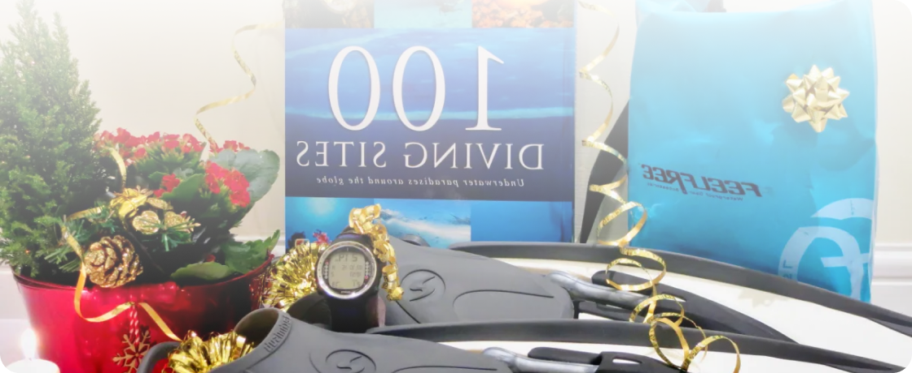

December 12, 2023
Whether for Christmas or a birthday, you may wonder how to please a scuba diving addict. You came to the right place; here is a selection of the best gifts for scuba divers. This gift list is based on my favourite items. I personally own them, and I’m sure it will make another scuba diver happy. Let me guide you through different gift ideas to fit both your budget and the profile of the scuba diver you want to treat.
Here is a summary of my list of ideas of gifts for scuba divers, with the profile of the diver and the level of budget to spend:
I also added some other ideas of gifts for scuba divers from the product reviews on my blog.